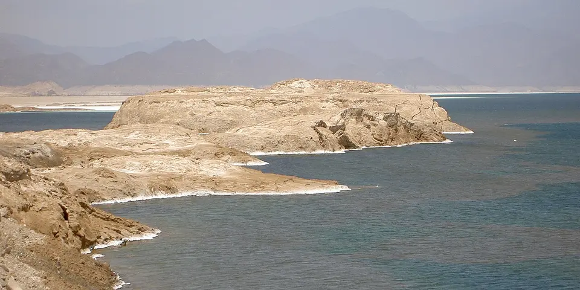

Sub-Saharan Africa
Djibouti on a budget
Djibouti is a small, expensive country with otherworldly landscapes, from the salt flats of Lake Assal to the limestone chimneys of Lac Abbé, plus whale sharks in the bay.
Photo: Fishercd, Public domain, via Wikimedia Commons

Classic route
Djibouti City, Lake Assal, Lac Abbé and the bay for whale sharks. 5 days.
Before you go
Flights to Lake Assal: Skyscanner · Kiwi.com · Google Flights
Hostels and guesthouses in Lake Assal · Lac Abbé · Djibouti City · Tadjoura
Tours and tickets: Lake Assal · Lac Abbé
Mobile data: Djibouti eSIM
Travel insurance: SafetyWing
How much 8 places in Djibouti cost
Daily budgets per person in US dollars: a hostel dorm or simple guesthouse, local food, local transport and the usual entry fees.
-
Lake Assal
A salt lake 155 m below sea level, the lowest point in Africa, ringed by dazzling white salt crusts and dark lava fields.
Bed $50 · Food $15 · Getting around $30 · Extras $5
Budget tip: Tours from Djibouti City are the easiest way. Share a 4x4 with others to split the cost, and bring sandals for the sharp salt.
$100per day -
Lac Abbé
Steaming limestone chimneys rise from a desert lakeshore, glowing pink and orange at dawn as flamingos feed in the shallows.
Bed $50 · Food $15 · Getting around $30 · Extras $5
Budget tip: Stay overnight at the Afar camp for sunrise. Meals are usually included, so bring little more than water and a warm layer.
$100per day -
Djibouti City
A port city with a lively central market, the African Quarter and Yemeni-style fish restaurants.
Bed $50 · Food $15 · Getting around $6 · Extras $4
Budget tip: Hotels are expensive, so share rooms. Eat poisson yéménite, fish baked in a clay oven, in the local quarter.
$75per day -
Tadjoura
A white-walled town across the gulf, with whale sharks gathering offshore from November to February.
Bed $40 · Food $12 · Getting around $10 · Extras $25
Budget tip: Share boat trips for the whale sharks from Djibouti City. The ferry to Tadjoura is cheaper than a tour.
$87per day -
Obock
Quiet northern port town, the first French foothold in the region, with an old colonial cemetery, mangroves and dhows across the strait.
Bed $35 · Food $12 · Getting around $15 · Extras $5
Budget tip: Take the public ferry from Djibouti City when it runs, which is much cheaper than chartering a boat.
$67per day -
Day Forest National Park
Juniper forest high in the Goda Mountains, home to the endemic Djibouti francolin, with cool trails and Afar villages near the camps.
Bed $40 · Food $12 · Getting around $20 · Extras $5
Budget tip: Stay in a simple community campement with meals included, and share a 4x4 from Tadjoura to split transport costs.
$77per day -
Moucha Island
Coral-fringed island in the Gulf of Tadjoura with white sand, snorkelling reefs and mangroves, about half an hour by boat from Djibouti City.
Bed $50 · Food $15 · Getting around $25 · Extras $15
Budget tip: Share a boat transfer with other travellers from the port, bring your own snacks and water, and pack snorkel gear to avoid rental fees.
$105per day -
Arta Beach
Shoreline on the Gulf of Tadjoura where whale sharks gather close to shore between roughly November and February.
Bed $50 · Food $15 · Getting around $20 · Extras $30
Budget tip: Book a whale shark boat trip with an operator that limits group size and keeps distance, and go early in the season for calmer water.
$115per day
Know before you go
Djibouti on a budget: the basics
Currency
$1 = 178 DJF
Djiboutian franc
| Dollars to DJF | DJF to dollars | ||
|---|---|---|---|
| $1 | 178 DJF | 100 DJF | $0.563 |
| $5 | 889 DJF | 500 DJF | $2.81 |
| $10 | 1,777 DJF | 1,000 DJF | $5.63 |
| $20 | 3,554 DJF | 5,000 DJF | $28.13 |
| $50 | 8,886 DJF | 10,000 DJF | $56.27 |
| $100 | 17,772 DJF | 50,000 DJF | $281 |
A typical day here (about $100) is roughly 18,000 DJF.
Mid-market rate on 2026-10-05. Cash machines and exchange desks pay a little less.
Getting around
Minibuses cover Djibouti City cheaply, but Lake Assal and Lac Abbé need a 4x4 tour or a rented vehicle with a driver. Joining others on a tour is the best way to split costs. Whale-shark trips in the Gulf of Tadjoura run mostly from November to January.
Where to sleep
Budget beds are limited to simple hotels in the capital. At Lac Abbé, basic encampments with huts and shared meals are the usual stay.
What to eat
- Skoudehkaris: spiced rice cooked with lamb or goat
- Fah-fah: spicy goat soup with flatbread
- Laxoox: spongy flatbread, often eaten at breakfast
- Shaah: sweet spiced tea with milk
Money
Djibouti is expensive, and cash in francs, US dollars or euros is the norm. ATMs exist in the capital, and tipping is modest.
Phone data
Djibouti Telecom is the only operator, and SIMs need a passport; coverage is limited outside the capital.
Heads up
Heat is extreme from May to September, so plan trips for the cooler months and carry plenty of water.
Djibouti travel: quick answers
How much does a day in Djibouti cost on a budget?
About $100 a day for one person, from $67 in Obock to $115 in Arta Beach. That covers a hostel dorm or simple guesthouse, local food, local transport and the usual entry fees, so a week runs about $700 before flights.
When is the best time to visit Djibouti?
November to February is the best time, with the most reliable weather for getting around.
What is the cheapest place to visit in Djibouti?
Obock, at about $67 a day. Quiet northern port town, the first French foothold in the region, with an old colonial cemetery, mangroves and dhows across the strait.
How long do you need in Djibouti?
Djibouti City, Lake Assal, Lac Abbé and the bay for whale sharks. 5 days.
How much is $1 in Djibouti?
One US dollar is about 178 Djiboutian franc (DJF), going by the mid-market rate on 2026-10-05. So $20 is roughly 3,554 DJF, and a typical budget day of $100 comes to about 18,000 DJF.
How do you get around Djibouti cheaply?
Minibuses cover Djibouti City cheaply, but Lake Assal and Lac Abbé need a 4x4 tour or a rented vehicle with a driver. Joining others on a tour is the best way to split costs. Whale-shark trips in the Gulf of Tadjoura run mostly from November to January.
What food should you try in Djibouti?
Skoudehkaris, spiced rice cooked with lamb or goat. Fah-fah, spicy goat soup with flatbread. Laxoox, spongy flatbread, often eaten at breakfast. Shaah, sweet spiced tea with milk.
Planning around the seasons? See where to go in November, or compare the cheapest countries nearby.
Similar budgets nearby
- Seychelles $106/day
- Rwanda $88/day
- Zambia $85/day
- Gabon $85/day